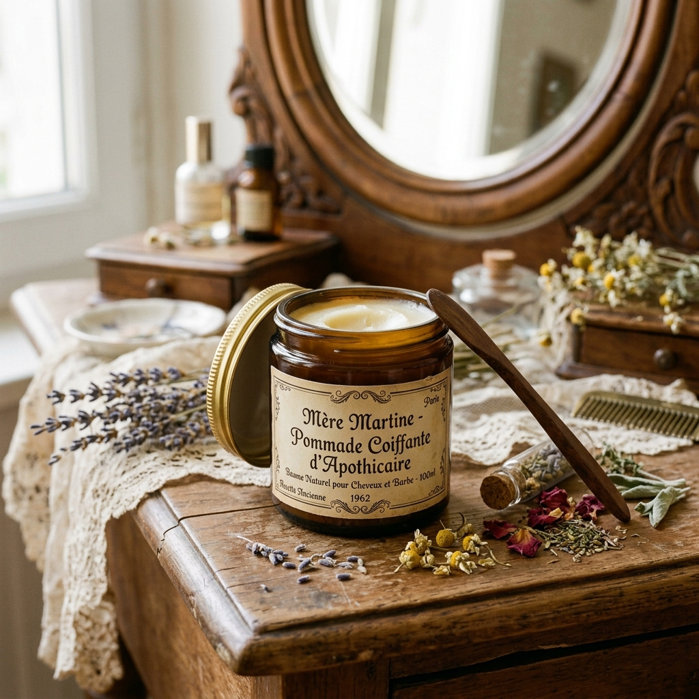

Brillance & Texture

POT VERRE AMBRÉ 60ML • CIRE LOCALE
Coiffage Végétal
Pommade Coiffante à l'Ancienne
Dompte les mèches rebelles, lisse les frisottis et offre une brillance soyeuse sans aucun effet cartonné ni résidu blanc.
✦ Composition Vivante
Beurre de karité brut, cire d'abeille bourbonnaise & huile de ricin première pression.
Zéro Silicone
Rinçage Facile